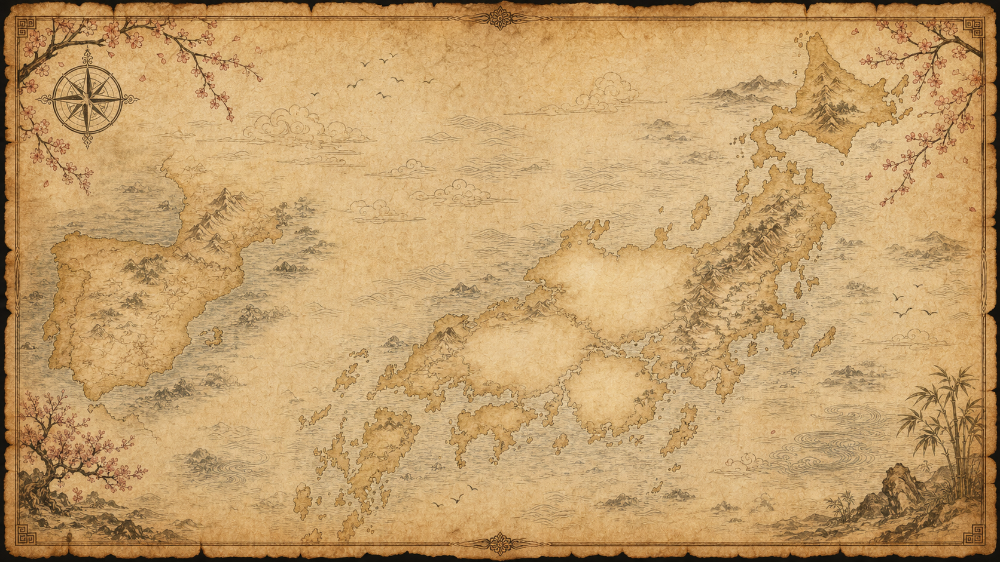

PROJECT JAPAN · RUTA 001
Nuestra aventura en Japón
MAPA RECUPERADO

«No es sólo un viaje.
Es una historia que
quedará contigo
para siempre.»

PROJECT JAPAN · EXPEDICIÓN 001
Un viaje.
Un viaje.
Infinitos recuerdos.
Desliza para recorrer el itinerario recuperado.
ARCHIVO CENTRAL · CARTOGRAFÍA TEMPORAL
RUTA 001 K